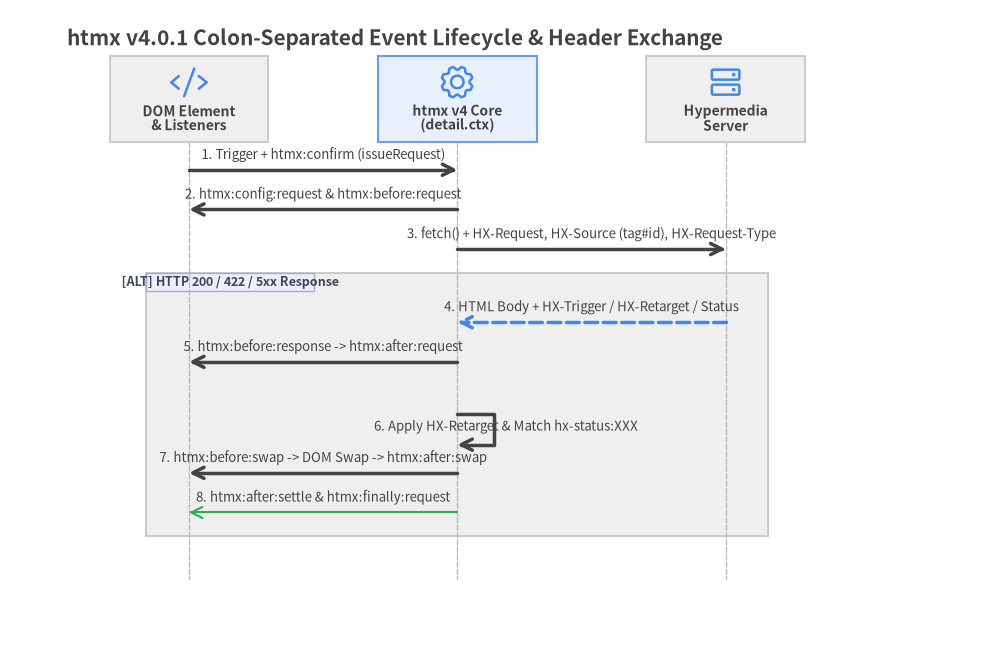

5. Headers, Events & Status Routing
htmx v4.0.1 coordinates client-server hypermedia state through standardized HX-* HTTP headers, declarative status-code routing (hx-status:XXX), and a colon-separated htmx:phase:action lifecycle event bus exposing the unified detail.ctx request context.

Source Code
from drawlib import canvas
from drawlib.diagrams.sequence import Participant, PhosphorIcon, SequenceDiagram
from drawlib.styles import Styles
canvas.clear()
canvas.setup(width=164, height=106)
d = SequenceDiagram(
node_style=Styles.Primary,
node_text_style=Styles.DarkBold.patch(text_size=10.0),
edge_style=Styles.DarkBold,
edge_text_style=Styles.Dark.patch(text_size=9.5),
node_card_style=Styles.Neutral,
title="htmx v4.0.1 Colon-Separated Event Lifecycle & Header Exchange",
autonumber=True,
col_width=44.0,
step_y=6.5,
)
dom = d.add(Participant("DOM Element\n& Listeners", width=26, height=14, icon=PhosphorIcon.CODE, icon_size=6.5))
core = d.add(
Participant("htmx v4 Core\n(detail.ctx)", width=26, height=14, icon=PhosphorIcon.GEAR, icon_size=6.5, card_style=Styles.PrimaryNeutral)
)
server = d.add(Participant("Hypermedia\nServer", width=26, height=14, icon=PhosphorIcon.HARD_DRIVES, icon_size=6.5))
dom.request(core, "Trigger + htmx:confirm (issueRequest)")
core.request(dom, "htmx:config:request & htmx:before:request")
core.request(server, "fetch() + HX-Request, HX-Source (tag#id), HX-Request-Type")
with d.alt("HTTP 200 / 422 / 5xx Response") as blk:
blk.style = Styles.Neutral.patch(line_style="dashed")
server.reply(core, "HTML Body + HX-Trigger / HX-Retarget / Status", style=Styles.PrimaryBold)
core.request(dom, "htmx:before:response -> htmx:after:request")
core.request(core, "Apply HX-Retarget & Match hx-status:XXX")
core.request(dom, "htmx:before:swap -> DOM Swap -> htmx:after:swap")
core.request(dom, "htmx:after:settle & htmx:finally:request", style=Styles.Success)
d.draw(xy=(6.0, 4.0))
canvas.save()
5.1 HTTP Request & Response Headers
Every htmx request carries structured metadata headers so your backend can inspect what triggered the action and tailor its response accordingly.
Request Headers Sent by htmx v4.0.1
| Request Header | Format / Value in htmx v4.0.1 | Change from htmx 2 & Usage Notes |
|---|---|---|
HX-Request |
"true" |
Always sent on every htmx-initiated fetch() call. |
HX-Source |
tag#id (e.g. button#save-btn or form) |
Replaces HX-Trigger & HX-Trigger-Name from htmx 2. Identifies the triggering element by lowercase tag name and #id. |
HX-Target |
tag#id (e.g. div#results) |
Upgraded from bare ID in htmx 2 to tag#id format. |
HX-Request-Type |
"partial" or "full" |
New in v4: "partial" for targeted swaps; "full" when targeting body, restoring history, or using hx-select. |
HX-Current-URL |
Full browser location.href |
Lets the server inspect the current page URL before rendering partials. |
HX-Boosted |
"true" |
Present when the request originated from an hx-boost link or form. |
HX-History-Restore-Request |
"true" |
Present when htmx fetches a page during browser Back/Forward restoration. |
Response Headers Sent by the Server
| Response Header | Accepted Values | Effect in htmx v4.0.1 |
|---|---|---|
HX-Trigger |
Event name (refreshTable) or JSON ({"showToast": {"msg": "Saved"}}) |
Dispatches custom DOM events after the response completes. (Replaces HX-Trigger-After-Swap / After-Settle.) |
HX-Retarget |
Extended CSS selector (e.g. #error-banner, closest .card) |
Overrides the client element's hx-target for this response. |
HX-Reswap |
Swap specification (e.g. innerMorph transition:true) |
Overrides hx-swap for this response. |
HX-Reselect |
CSS selector (e.g. #summary-fragment) |
Overrides hx-select to extract a specific subset of the response. |
HX-Push-Url |
URL path or "false" |
Pushes a new entry into browser history.pushState(). |
HX-Replace-Url |
URL path or "false" |
Replaces the current entry in browser history.replaceState(). |
HX-Location |
URL string or HCON/JSON ({"path": "/dashboard", "target": "#main"}) |
Performs an in-page AJAX navigation without a full browser reload. |
HX-Redirect |
URL string (e.g. /login) |
Triggers a full-page browser navigation (location.href). |
HX-Refresh |
"true" |
Forces a full browser reload of the current page (location.reload()). |
5.2 Declarative HTTP Status Routing (hx-status:XXX)
In htmx 2, 4xx and 5xx responses did not swap content by default. In htmx v4.0.1, all HTTP status codes swap by default except 204 No Content and 304 Not Modified (configured via htmx.config.noSwap = [204, 304]).
To customize swap targets, strategies, or history behavior per HTTP status code, use hx-status:XXX attributes directly in your HTML:

Source Code
from drawlib import canvas
from drawlib.diagrams.flow import Decision, End, FlowDiagram, Process, Start
from drawlib.styles import Styles
canvas.clear()
canvas.setup(width=192, height=82)
flow = FlowDiagram(
node_style=Styles.Neutral.patch(text_size=9.5),
edge_style=Styles.DarkBold,
edge_text_style=Styles.Dark.patch(text_size=9.5),
title="htmx v4.0.1 Response Header & hx-status:XXX Resolution Order",
)
resp = flow.add(Start("HTTP Response\nReceived", width=30, height=12, style=Styles.PrimaryFlat.patch(text_size=9.5), text_style=Styles.WhiteBold.patch(text_size=9.5)), xy=(20, 42))
hdrs = flow.add(Process("1. Apply Server Headers\nHX-Retarget / HX-Reswap\nHX-Reselect", width=38, height=16, style=Styles.PrimaryNeutral.patch(text_size=9.5)), xy=(64, 42))
match = flow.add(Decision("2. Match\nhx-status:XXX?\n(Exact -> NNx -> Nxx)", width=42, height=22, style=Styles.SecondaryNeutral.patch(text_size=9.5)), xy=(112, 42))
override = flow.add(End("Apply Status Overrides\ntarget: / swap: / select:\npush: / replace: / transition:", width=46, height=16, style=Styles.PrimaryFlat.patch(text_size=9.5), text_style=Styles.WhiteBold.patch(text_size=9.5)), xy=(164, 62))
noswap = flow.add(End("Check config.noSwap\n(Default: 204, 304 skip;\n200/4xx/5xx run swap)", width=46, height=16, style=Styles.Neutral.patch(text_size=9.5)), xy=(164, 20))
resp.connect(hdrs, padding=1.0)
hdrs.connect(match, padding=1.0)
match.connect(override, label="Matched", start_side="top", end_side="left", padding=1.0)
match.connect(noswap, label="No Match", start_side="bottom", end_side="left", padding=1.0)
flow.draw(xy=(4.0, 4.0))
canvas.save()
Wildcard Matching & Supported Modifiers
htmx evaluates hx-status attributes from most specific to least specific and stops at the first match:
- Exact status code:
hx-status:422orhx-status:404 - Decade wildcard (
NNx):hx-status:50x(matches500–509) - Class wildcard (
Nxx):hx-status:4xxorhx-status:5xx
Each hx-status:XXX attribute accepts space-separated key-value modifiers (swap:, target:, select:, push:, replace:, transition:):
<form hx-post="/checkout/pay"
hx-target="#order-confirmation"
hx-push-url="/checkout/complete"
hx-status:422="target:#payment-errors swap:innerMorph push:false"
hx-status:409="target:#cart-conflict swap:outerHTML push:false"
hx-status:5xx="target:#global-toast swap:afterbegin push:false">
<input type="text" name="card_token">
<div id="payment-errors"></div>
<button type="submit">Complete Purchase</button>
</form>
[!NOTE] If the server sends
HX-Retarget,HX-Reswap, orHX-Reselectresponse headers, htmx applies those headers first and then applies any matchinghx-status:XXXoverrides on top.
5.3 Colon-Separated Lifecycle Events & detail.ctx
htmx 4 replaces htmx 2's camelCase event names (htmx:configRequest, htmx:afterSwap) with a uniform colon-separated htmx:phase:action hierarchy:
| Category | Event Name | Cancellable? | Description |
|---|---|---|---|
| DOM Init | htmx:before:process / htmx:after:process |
before is cancellable |
Fires when htmx scans and initializes a DOM node or subtree. |
| DOM Init | htmx:before:init / htmx:after:init |
before is cancellable |
Fires around individual element initialization (elt._htmx). |
| DOM Cleanup | htmx:before:cleanup / htmx:after:cleanup |
No | Fires before/after htmx tears down listeners on a removed element. |
| Confirmation | htmx:confirm |
Yes (preventDefault()) |
Fires before a request; exposes detail.issueRequest() and detail.dropRequest(). |
| Request | htmx:config:request |
Yes (preventDefault()) |
Mutate detail.ctx.request.headers, .body (FormData), or .action. |
| Request | htmx:before:request |
Yes (preventDefault()) |
Fires immediately before fetch() is invoked. |
| Response | htmx:before:response |
Yes (preventDefault()) |
Fires when fetch() headers arrive, before reading ctx.response.raw body stream. |
| Response | htmx:after:request |
No | Fires after response text is read (detail.ctx.text is populated). |
| Response | htmx:finally:request |
No | Always fires when an issued request completes, errors, or is aborted. |
| Swap | htmx:before:swap / htmx:after:swap |
before is cancellable |
Fires before and after DOM insertion (detail.tasks holds swap tasks). |
| Swap | htmx:finally:swap |
No | Fires at the conclusion of the swap phase regardless of outcome. |
| Settle | htmx:before:settle / htmx:after:settle |
No | Fires around CSS transition settling (detail.newContent). |
| Errors | htmx:response:error |
No | Fires when the server returns an HTTP status >= 400. |
| Errors | htmx:error |
No | Consolidates network failures, timeouts, and swap exceptions (detail.error). |
| Control | htmx:abort |
Dispatched by user | Dispatch htmx.trigger("#elt", "htmx:abort") to cancel in-flight requests. |
Inspecting and Mutating evt.detail.ctx
All request and swap events provide evt.detail.ctx (HtmxRequestCtx):
document.body.addEventListener('htmx:config:request', (evt) => {
const { ctx } = evt.detail;
// Attach a dynamic bearer token and correlation ID to every request
ctx.request.headers['Authorization'] = `Bearer ${window.authToken}`;
ctx.request.headers['X-Correlation-ID'] = crypto.randomUUID();
// Append a field to the FormData body before encoding
if (ctx.request.body instanceof FormData) {
ctx.request.body.set('client_tz', Intl.DateTimeFormat().resolvedOptions().timeZone);
}
});
5.4 Inline Handlers (hx-on:*) & Async htmx:confirm
Inline Event Handling with hx-on:*
Bind standard DOM events or colon-separated htmx:* lifecycle events directly in markup using hx-on:<event-name>:
<!-- Reset a form automatically after a successful 200 swap -->
<form hx-post="/comments"
hx-target="#comment-feed"
hx-swap="beforeend"
hx-on:htmx:after:swap="if (event.detail.ctx.response.status === 200) this.reset()">
<textarea name="body" required></textarea>
<button type="submit">Post Comment</button>
</form>
Custom Asynchronous Confirmation Modals (htmx:confirm)
You can use hx-confirm="Are you sure?" for native window.confirm(), hx-confirm="js:showCustomModal()" (which awaits a returned Promise), or intercept the htmx:confirm event globally to integrate a custom <dialog> modal:
document.body.addEventListener('htmx:confirm', (evt) => {
const message = evt.detail.ctx.sourceElement.getAttribute('hx-confirm');
if (!message) return;
// Prevent the default window.confirm() dialog
evt.preventDefault();
// Open a custom HTML <dialog> and call issueRequest() or dropRequest()
openConfirmationDialog(message, {
onConfirm: () => evt.detail.issueRequest(),
onCancel: () => evt.detail.dropRequest(),
});
});